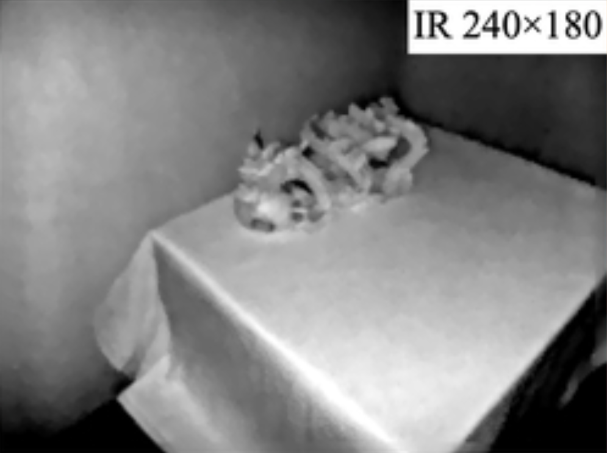
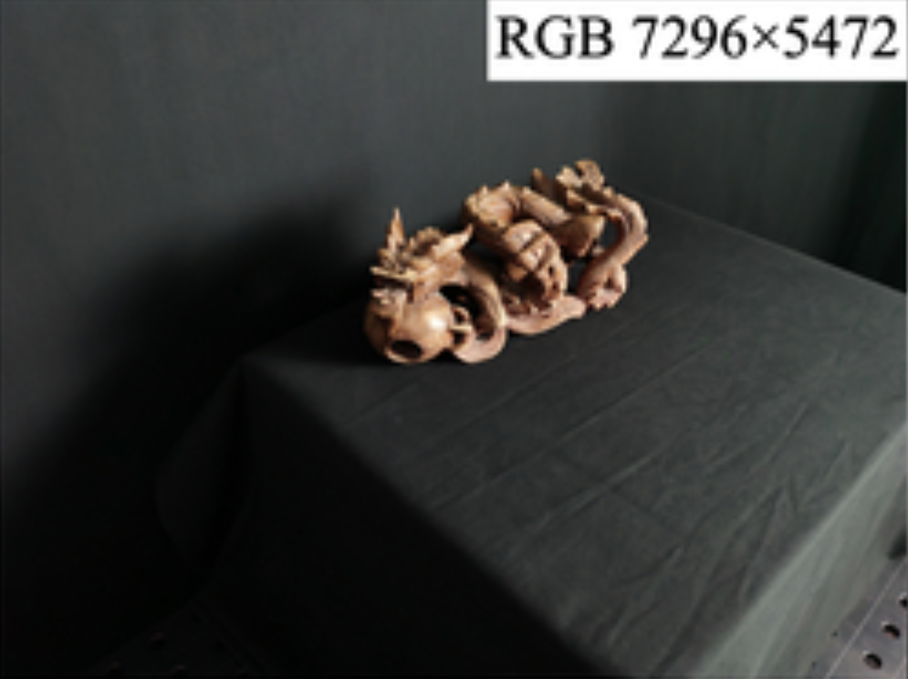
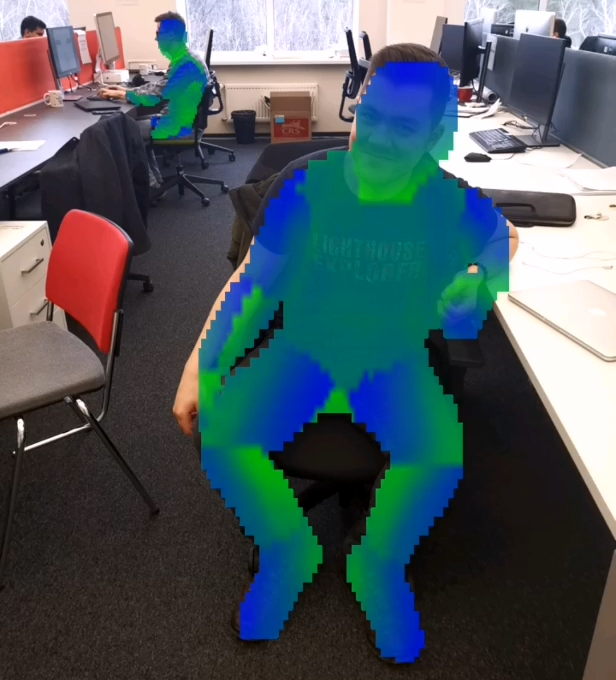
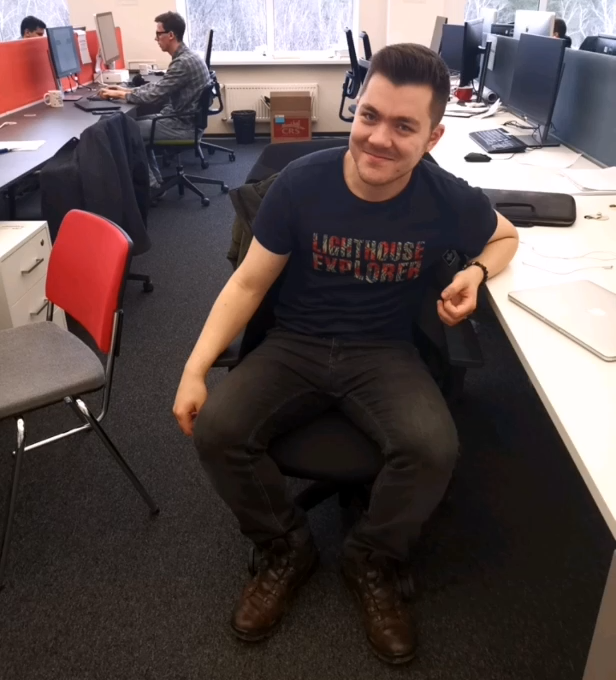

I am a Senior Research Scientist at the T-Bank AI Research Center and hold a Ph.D. in
Computer Science, which I earned at Skoltech within
Evgeny
Burnaev's Applied AI Center.
I received a Master's Degree in Data Science from the Skoltech in 2020. Prior to
that, I
received my Bachelor's in Applied Mathematics and Physics from the Moscow Institute of Physics and
Technology (MIPT) in 2018.
We propose a novel framework that leverages 3D Gaussian Splatting to effectively remove transient objects from input videos, enabling accurate and stable 3D scene reconstruction.
We present a novel approach that integrates dense keypoint descriptors into 3D Gaussian Splatting to enhance visual localization, achieving state-of-the-art performance on popular indoor and outdoor benchmarks.
Differently from existing data-driven methods for predicting sharp geometric
features in
sampled 3D shapes, which reduce this problem to feature
classification, we propose to regress a scalar field representing the distance
from point
samples to the closest feature line on local patches.
We present an approach for the reconstruction of textured 3D meshes of human
heads from one or few views.


Multi-sensor large-scale dataset for multi-view 3D reconstruction
Oleg Voynov, Gleb Bobrovskikh, Pavel Karpyshev, Andrei-Timotei Ardelean,
Arseniy Bozhenko, Saveliy Galochkin, Ekaterina Karmanova, Pavel Kopanev,
Yaroslav Labutin-Rymsho, Ruslan Rakhimov, Aleksandr Safin, Valerii
Serpiva,
Alexey Artemov, Evgeny Burnaev, Dzmitry Tsetserukou, Denis Zorin
CVPR, 2023
project page /
arXiv
A new multi-sensor dataset for 3D surface reconstruction that includes
registered RGB and
depth data from sensors of different resolutions and modalities under a large
number of
lighting conditions.


Making DensePose fast and light Ruslan Rakhimov, Emil Bogomolov, Alexandr Notchenko, Fung Mao,
Alexey Artemov,
Denis Zorin, Evgeny Burnaev
WACV, 2021
arXiv /
code
We target the problem of redesigning the DensePose R-CNN model's architecture so
that the
final network retains most of its accuracy but becomes more light-weight and
fast.
{kind=link}